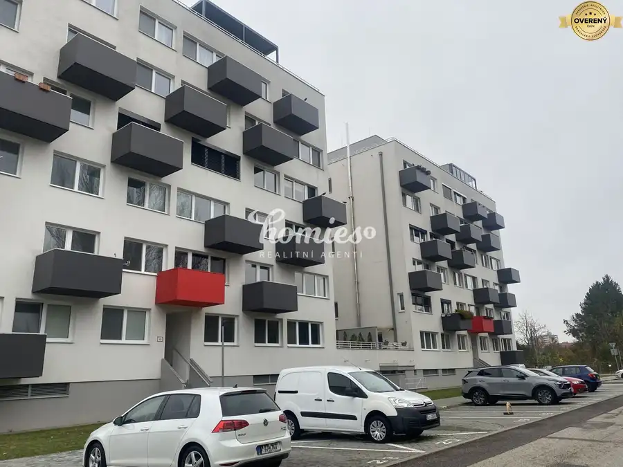
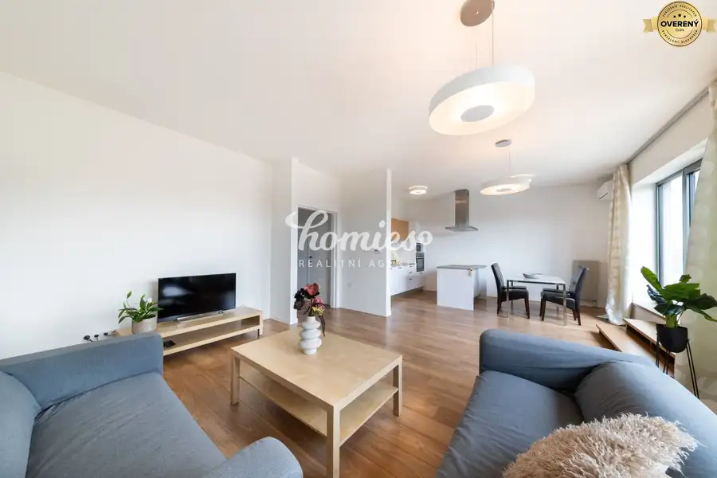
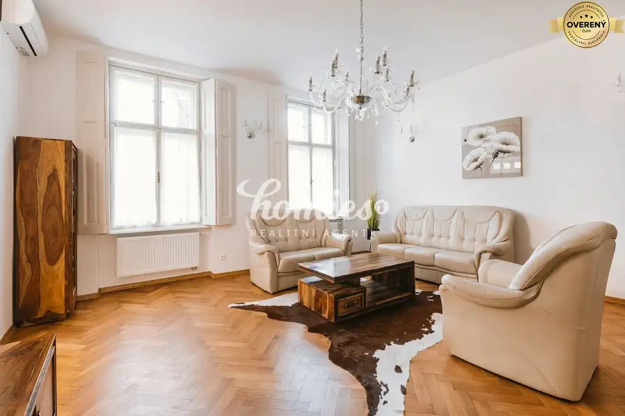
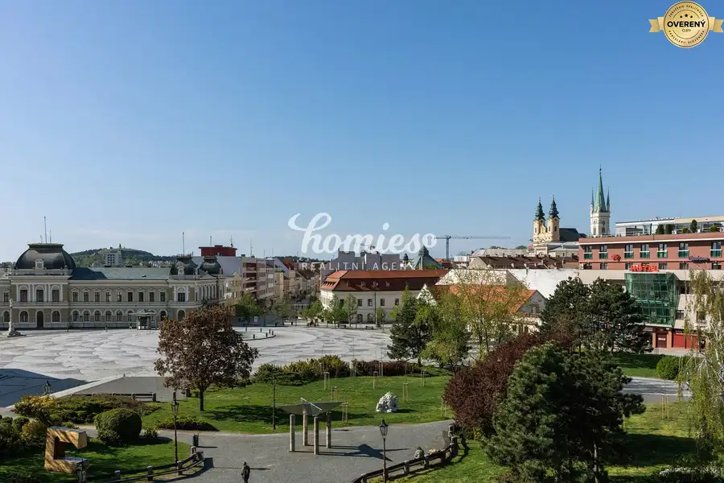

Prenájom · Ostatné
PRENÁJOM parkovacieho miesta - Chrenová
Nitra
40,- €

- Plocha12 m²
- Stavpôvodný
O nehnuteľnosti
Ponúkame na prenájom označené súkromné parkovacie miesto nachádzajúce sa priamo pred bytovým domom ZipCity.
Miesto je dobre viditeľné, pohodlne dostupné a situované v tichej lokalite.
? Lokalita: Chrenová – Lomnická ulica, Nitra
? Cena prenájmu: 40€/mes.
V prípade záujmu ma neváhajte kontaktovať:
Janka Vravková, mail:
Parametre
- Zastavaná plocha
- 12 m²
- Úžitková plocha
- 12 m²
- Počet poschodí
- 1
- Stav
- pôvodný
- Status
- aktívne
- Voda
- nie
- El. napätie
- nie
- Plyn
- nie
- Kanalizácia
- nie
- Parkovanie
- vlastné vyhradené
- Postavené z
- Zmiešané
- Energetický certifikát
- nie
- Dátum zverejnenia
- 2025-12-02
Kde to je
Ďalšie ponuky
Celá ponukaMohlo by Vás zaujímať

BytNové 1 200 €PRENÁJOM 3-izbový moderný byt s garážou, a terasou, Nitra - centrum Nitra 4-izbový89 m²3. podlažie
BytNové 1 000 €PRENÁJOM 3 izbový luxusný byt s parkovaním, záhradou, centrum Nitra 3-izbový100 m²1. podlažie
BytNové 1 300 €PRENÁJOM výnimočný 3 izbový luxusný byt v centre Nitry, terasa Nitra 3-izbový117 m²3. podlažie